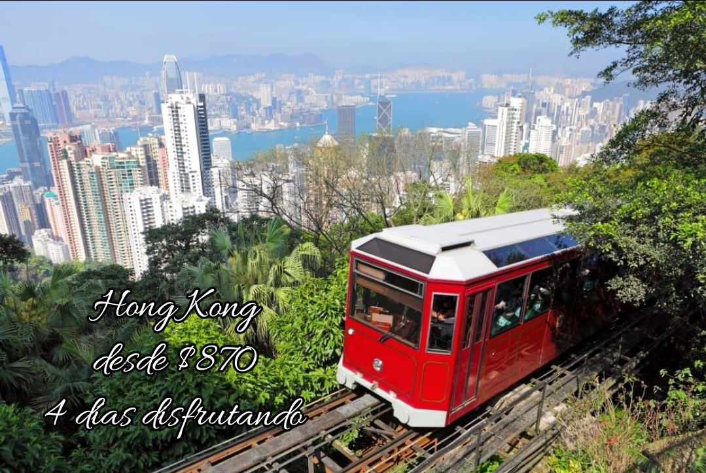
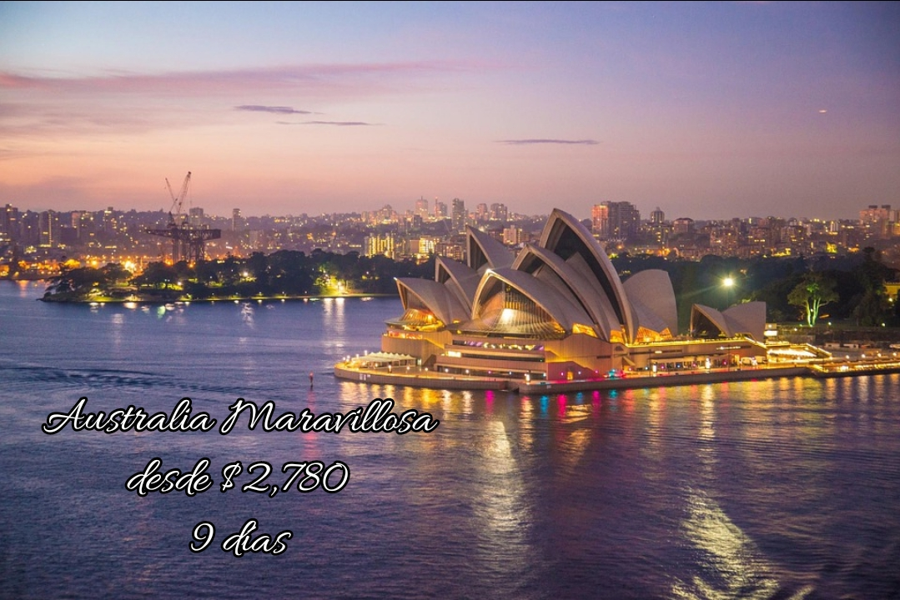
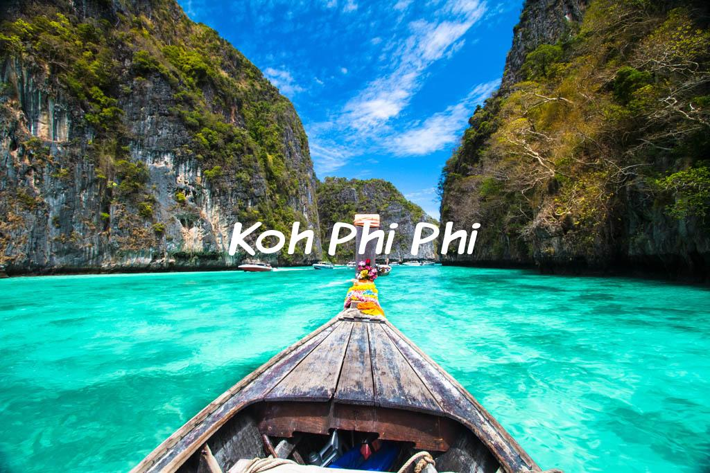
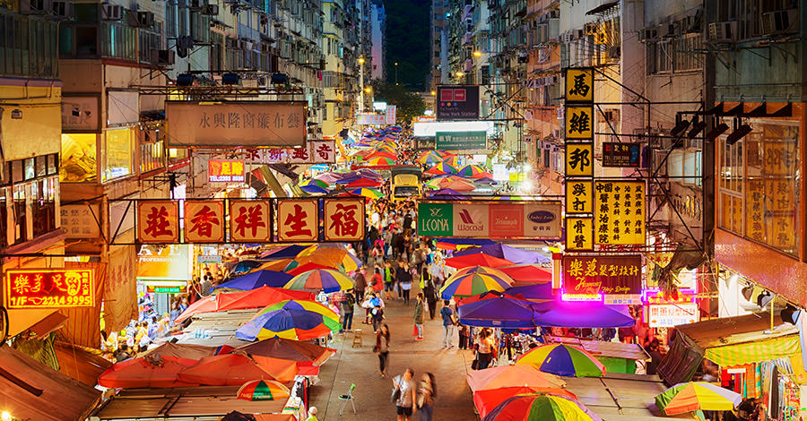

<!DOCTYPE html>
<html>
<head>
<title>Ofertas</title>
<font size="5" face="Century">
<h1 align="center">Ofertas de Verano 2022</h1>
<hr size="7" color="#F770D2" width="70%" noshades>
</font>
<font size="5" color="black" face="Baskerville Old Face">
<a name="menu">Menú</a><br><br>

<div class="contenedor-imagenes">
<div>
  
</div>
<div>
  
</div>
<div>
   
</div>
<br>
<tr>
<table width="90%">
<td align="left"><a href="#Australia"><button id="boton" type="button">Saber más</button></td>
<td align="center"><a href="#Hong"><button id="boton" type="button">Saber más</button></td></td>
<td align="right"><a href="#Tailandia"><button id="boton" type="button">Saber más</button></td></td></a>
</tr>
</table>
</head>
<body>
<SCRIPT LANGUAGE="Javascript">
alert("Escríbenos para saber más ofertas")
</SCRIPT>

<font color="Black" size="4" face="Century">
<a name="Tailandia"><h2><big><i>Bangkok y Playas de Tailandia</i></big></h2>
</font>
<hr size="7" color="#F770D2" align="left" width="40%" noshades>
<font size="5" color="#4D9A00" face="Baskerville Old Face">
<a href="#menu">Ir al inicio</a>
<p align="justify">
<br><u>Desde $1330, 10 días/ 2 comidas.</u>
</font>
<font size="3" color="Black" face="Baskerville Old Face">
<br><b>Programa a seguir</b>
<dl>
<dt>DÍA 1 BANGKOK</dt>
<dd>Llegada. Traslado al hotel. Resto del día libre.Aquí reside 
la familia real, se asienta el gobierno y la administración, 
y es el mayor centro de las actividades industriales, comerciales y financieras del país. La capital de Tailandia es 
también la puerta principal del país y la atracción más importante para el turismo.</dd>
<dt>DÍA 2 BANGKOK</dt>
<dd>Por la mañana, visitaremos algunos de los más 
inusuales templos budistas de Bangkok. La visita se inicia 
en Wat Trimitr; seguiremos hasta llegar al Wat Po, y el Chedis de los Reyes, el monumento budista más,alto del mundo. Continuaremos con la visita del Gran Palacio Real, antigua residencia de los reyes de Tailandia, donde podrán contemplar un vivo ejemplo de la arquitectura 
de la antigua corte Siamesa. Por la noche, podrán degustar una Cena
en el Silom Village (traslado al restaurante no incluido), un 
auténtico poblado Thai, regreso individual al hotel. Alojamiento</dd>
<dt>DÍA 3 BANGKOK</dt>
<dd>Desayuno. Día libre a su disposición. Si lo desea opcionalmente puede realizar una excursión al Damnoen Saduak, el mercado flotante más colorista del reino donde se pueden encontrar todo tipo de productos típicos. Alojamiento.</dd>
<dt>DÍA 4 BANGKOK   KRABI </dt>
<dd>Desayuno. Traslado al aeropuerto de Bangkok y salida en 
el vuelo hacia Krabi. Llegada a Krabi, traslado al hotel y 
Alojamiento.</dd>
<dt>DÍA 5 KRABI </dt>
<dd>Desayuno. Día libre a su disposición; realizar una visita opcional a las islas Phi Phi. disfrutar de un espléndido 
almuerzo en la isla de Phi Phi Ley y visitar bahía Maya donde se rodó la película de “La playa”. Alojamiento.</dd>
<dt>DÍA 6 KRABI   PHI PHI </dt>
<dd>Desayuno. Traslado al embarcadero y salida en ferry 
a Phi Phi en ferry de línea regular. Llegada al hotel y 
Alojamiento</dd>
<dt>DÍA 7 PHI PHI </dt>
<dd>Desayuno. Día libre a su disposición para ver la isla, visitar 
la bahía Maya. Alojamiento.</dd>
<dt>DÍA 8 PHI PHI   PHUKET </dt>
<dd>Desayuno. Traslado de salida para tomar el ferry a Phuket. 
Llegada a Phuket y traslado al hotel. Alojamiento.</dd>
<dt>DÍA 9 PHUKET </dt>
<dd>
Desayuno. Día libre para disfrutar de las playas de Phuket, 
de las instalaciones del hotel o realizar excursiones opcionales. Alojamiento</dd>
<dt>DÍA 10 PHUKET</dt>
<dd>
Desayuno. Traslado al aeropuerto. Fin de nuestros 
servicios.</dd>
</dl>
<b>IMPORTANTE</b><br>
Nuestro precio incluye: translados según itinerario, comidas según itinerario, seguro de viaje, asistencia de habla hispana a la llegada a Bangkok, Traslados según itinerario, 9 ó 10 noches de alojamiento en régimen de alojamiento.
</p>
</font>

<font color="Black" size="4" face="Century">
<a name="Australia"><h2><big><i>Australia Maravillosa</i></big></h2>
</font>
<hr size="7" color="#F770D2" align="left" width="40%" noshades>
<font size="5" color="Black" face="Baskerville Old Face">
<a href="#menu">Ir al inicio</a>
</font>
<br><br><table border="5" align="center" width="70%">

</font>
<tr>
<th align="center"><font size="4" color="#4D9A00" face="Baskerville Old Face">Día</th>
<th align="center"><font size="4" color="#4D9A00" face="Baskerville Old Face">Actividades programadas</th>
</font>
</tr>
<tr>
<td valign="middle" align="center"><font size="3" color="#4D9A00" face="Baskerville Old Face">DÍA 1 SYDNEY</td>
<td valign="middle" align="center"><font size="3" color="" face="Baskerville Old Face">Llegada a Sydney. Recepción en el aeropuerto por nuestro 
guía de habla hispana y traslado al hotel. Resto del día libre en la ciudad más grande y antigua de Australia, capital 
de Nueva Gales del Sur. Alojamiento.</td>
</tr>
<tr>
<td valign="middle" align="center"><font size="3" color="#4D9A00" face="Baskerville Old Face">DÍA 2 SYDNEY</td>
<td valign="middle" align="center"><font size="3" color="" face="Baskerville Old Face">
Desayuno. Salida para realizar un tour de medio día dedicado a descubrir: The Rocks, Kings Cross y la famosa 
playa de Bondi. Al mediodía, realizaremos un crucero, con 
Almuerzo incluido, por la bahía de Sydney, que nos dará 
la oportunidad de disfrutar de la espectacular vista de la 
Ópera; y el Fuerte Denison Pinchgut. 
Fin del tour en el centro y tarde libre. Regreso individual 
al hotel. Alojamiento</td>
</tr>
<tr>
<td valign="middle" align="center"><font size="3" color="#4D9A00" face="Baskerville Old Face">DÍA 3 SYDNEY </td>
<td valign="middle" align="center"><font size="3" color="" face="Baskerville Old Face">
Desayuno. Día libre.También puede realizar una excursión opcional de día completo a las 
Montañas Azules, Patrimonio de la Humanidad. El tour 
incluye la visita al Featherdale Wildlife Park. Se 
regresa a Sydney sobre las 18:00 horas. Alojamiento.</td>
</tr>
<tr>
<td valign="middle" align="center"><font size="3" color="#4D9A00" face="Baskerville Old Face">DÍA 4 SYDNEY   AYERS ROCK</td>
<td valign="middle" align="center"><font size="3" color="" face="Baskerville Old Face">
Desayuno. Traslado al aeropuerto para tomar el vuelo (no 
incluido) con destino Ayers Rock (durante el vuelo irán 
acompañados de su guía). Llegada y traslado al hotel. Por 
la tarde, visita a la base de Uluru para conocer los lugares sagrados de la zona. Después, traslado en autocar a 
Mutitjulu Waterhole. Continuación con la visita del Centro Cultural 
Uluru-Kata Tjuta, Al atardecer, serán trasladados nuevamente a 
Uluru para presenciar los cambios de colores que se producen en el monolito en este momento del día, mientras disfrutan de unos aperitivos y una copa de vino. Alojamiento</td>
</tr>
<tr>
<td valign="middle" align="center"><font size="3" color="#4D9A00" face="Baskerville Old Face">DÍA 5 AYERS ROCK MP</td>
<td valign="middle" align="center"><font size="3" color="" face="Baskerville Old Face">
Desayuno. Salida con el guía hacia Uluru para ver los primeros rayos del sol. Después, traslado a las 36 cúpulas de Kata 
Tjuta, donde se comienza un paseo suave siguiendo el 
arroyo entre las 2 cúpulas más altas, hasta llegar a Walpa 
Gorge. Tiempo libre para pasear y explorar la zona en la 
que podrán encontrar inusuales formaciones rocosas. Al 
atardecer, traslado para disfrutar de la Cena “Sonidos del 
Silencio”. Regreso al hotel. Alojamiento.</td>
</tr>
<tr>
<td valign="middle" align="center"><font size="3" color="#4D9A00" face="Baskerville Old Face">DÍA 6 AYERS ROCK   CAIRNS</td>
<td valign="middle" align="center"><font size="3" color="" face="Baskerville Old Face">
Desayuno. Traslado al aeropuerto y salida en vuelo (no 
incluido) a Cairns. Al llegar, recepción por el guía de habla 
hispana y traslado al hotel. Tarde libre. Alojamiento.</td>
</tr>
<tr>
<td valign="middle" align="center"><font size="3" color="#4D9A00" face="Baskerville Old Face">DÍA 7 CAIRNS (Arrecife de Coral)</td>
<td valign="middle" align="center"><font size="3" color="" face="Baskerville Old Face">Desayuno. Excursión de día completo, en catamarán 
o barco, a la Gran Barrera de Coral, La excursión incluye un Almuerzo a 
bordo del barco. Durante el recorrido se tendrá la oportunidad de practicar snorkel para disfrutar de la vida marina 
y del arrecife. Regreso al hotel. Alojamiento</td>
</tr>
<tr>
<td valign="middle" align="center"><font size="3" color="#4D9A00" face="Baskerville Old Face">DÍA 8 CAIRNS</td>
<td valign="middle" align="center"><font size="3" color="" face="Baskerville Old Face">Desayuno. Día libre en Cairns. Posibilidad de realizar de 
manera opcional la excursión de día completo Daintree 
& Moosman Gorge donde podrá disfrutar de una visita 
guiada incluyendo lugares de gran interés cultural en esta 
región Patrimonio de la Humanidad. Posterior embarque 
en un crucero por el río Daintree donde podrá admirar el 
ecosistema de la zona. Alojamiento</td>
</tr>
<tr>
<td valign="middle" align="center"><font size="3" color="#4D9A00" face="Baskerville Old Face">DÍA 9 CAIRNS</td>
<td valign="middle" align="center"><font size="3" color="" face="Baskerville Old Face">
Desayuno. Traslado al aeropuerto para embarcar en el 
vuelo que le llevará a su punto de destino y Fin de nuestros servicios. </td>
</tr>
</table>
<font size="5" face="Baskerville Old Face">
<br><b>NUESTRO PRECIO INCLUYE</b>
   <li>Salidas garantizadas con un mínimo de 2 pasajeros.</li>
   <li>Traslados especificados en el itinerario.</li>
   <li>Asistencia de habla hispana a la llegada a Sydney. Resto de 
traslados se realizan sin asistencia.</li>
   <li>8 noches de alojamiento en los hoteles indicados o similares.</li>
</font>
</p>
<font color="Black" size="4" face="Century">
<a name="Hong"><h2><big><i>Hong Kong</i></big></h2>
</font>
<hr size="7" color="#F770D2" align="left" width="40%" noshades>
<font size="4" color="Black" face="Baskerville Old Face">
<a href="#menu">Ir al inicio</a>
<p>
<dl>
<dt>DÍA 1 HONG KONG</dt>
<dd>Llegada y traslado al hotel. Además su impresionante skyline 
y la magnífica imagen que ofrece la Bahía Victoria iluminada, hacen de Hong Kong un lugar con personalidad 
propia. Alojamiento.</dd>
<dt>DÍA 2 HONG KONG</dt>
<dd>Desayuno. Visita de la ciudad incluyendo el Muelle de Pescadores Aberdeen, en otros tiempos un tranquilo pueblo 
de pescadores, y el Pico de Victoria, convertido en 
la zona residencial más prestigiosa de la isla y desde cuya 
cumbre se disfruta de una vista soberbia, divisandose a lo 
lejos las islas del Mar del Sur de la China. Tarde libre. Alojamiento.</dd>
<dt>DÍA 3 HONG KONG</dt>
<dd>Desayuno. Día libre para seguir disfrutando de la isla y sus 
templos, mercados, etc. Alojamiento.</dd>
<dt>DÍA 4 HONG KONG</dt>
<dd>Desayuno. Traslado al aeropuerto para tomar su vuelo de 
regreso o conectar con otro de nuestros itinerarios. Fin de 
nuestros servicios.</dd>
</dl>
<b>NUESTRO PRECIO INCLUYE</b>
<ol>
<li>Tour Exclusivo clientes Special Tours con salidas garantizadas con un mínimo de 2 pasajeros.</li>
<li>Visitas indicadas en el itinerario con guía local de habla hispana.</li>
<li>Seguro básico de viaje.</li>
</ol>
</p>

<br>
<p align="center"><b>Para más información contactanos</b>
<br><table width="30%"  align="center" CELLPADDING="3" CELLSPACING="2">

<tr>
<td><font size="4" color="#EF0EB4" face="Baskerville Old Face">Nombre:</td>
<td><font size="4" color="#EF0EB4" face="Baskerville Old Face">Email:</td>
</tr>
<tr>
<td>👤<input type="text" size="20" maxlength="20" placeholder="Ingrese nombre"></td>
<td>📩<input type="text" size="20" maxlength="20" placeholder="Ingrese correo"></td>
</tr>
<td><font size="4" color="#EF0EB4" face="Baskerville Old Face">Cronología:</td>
<td><font size="4" color="#EF0EB4" face="Baskerville Old Face">Teléfono:</td>
</tr>
<tr>
<td>🗓<input type="text" size="30" maxlength="30" placeholder="Ingrese aquí"></td>
<td>☎<input type="text" size="20" maxlength="20" placeholder="ejemplo: 231-**-**"></td>
</tr>
<tr>
<td><input type="submit"></td>
</tr>
</table> 
</font>

<br>
<table align="center" width="15%" CELLPADDING="1" CELLSPACING="1">
<tr>
	<td align="center" width="10" height="10"><a href="index.html" target="blank"></a></td>
</tr>
</table>

</body>
</html>